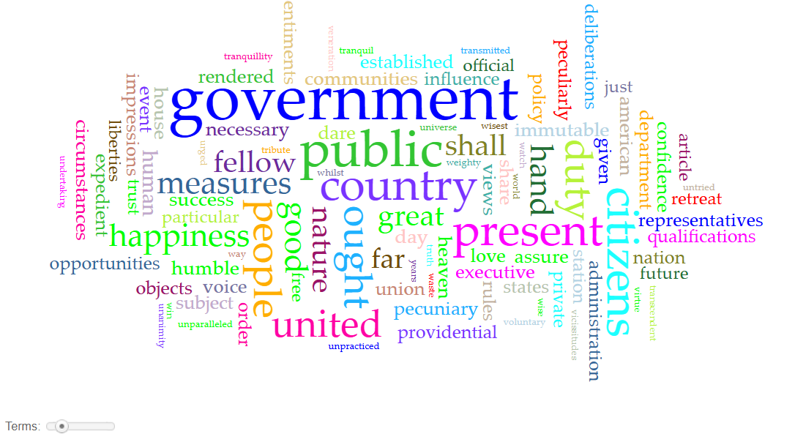
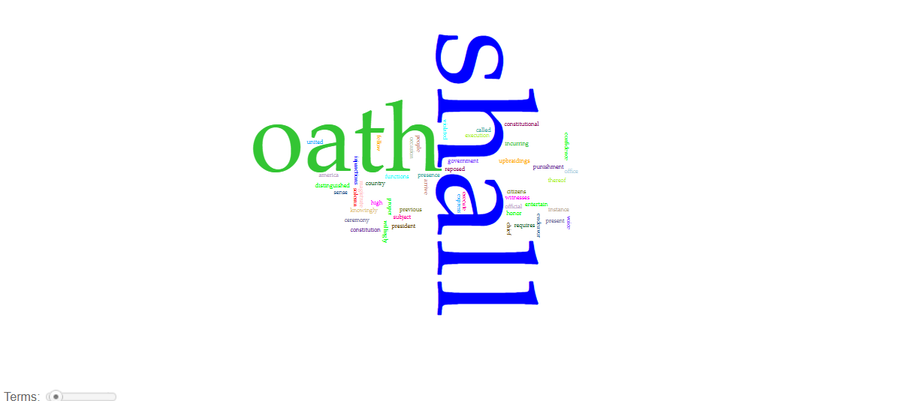
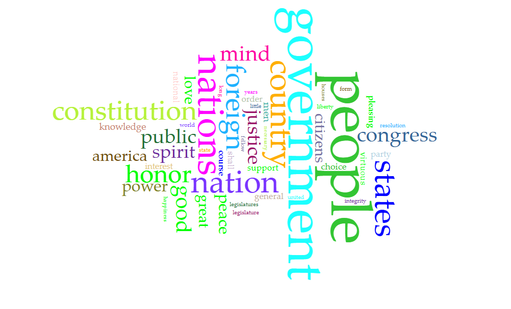
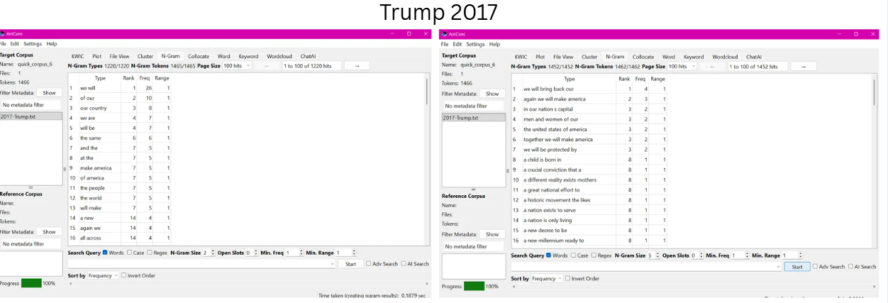
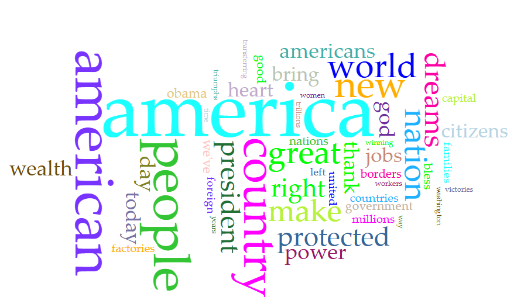
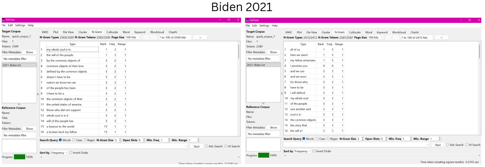
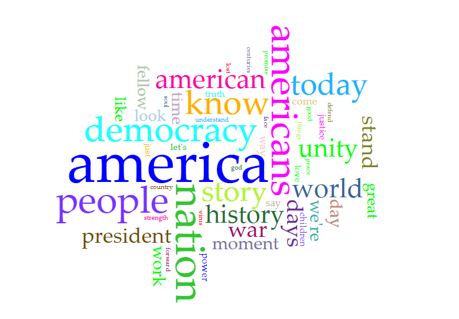
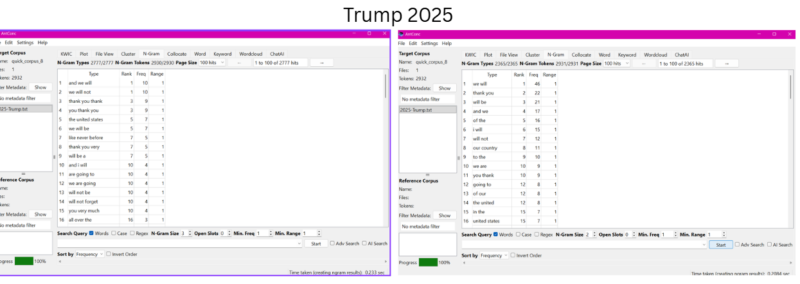
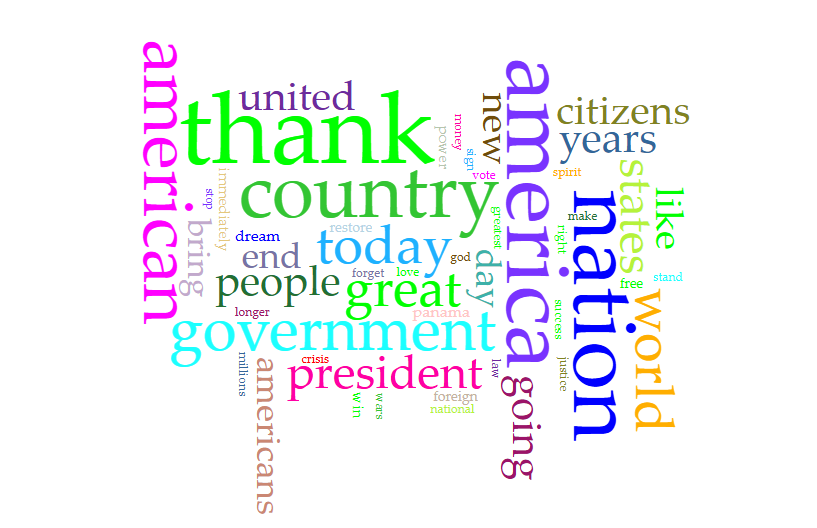

This website will compare the three most recent inaugural addresses which includes Trumps 2017 address, Bidens 2021 address and Trumps 2025 address. As well as the three earliest president addresses which includes Adams 1797, Washington 1789, and 1793 Washington address.
I chose to compare these to examine if there are similarities between earlier presidents, and recent presidents in the things they address.
I ran analysis which included antconc, and voyant word clouds. I noticed some things such as the wording change from older addresses to recent ones. The tone shifts from "the people" to "we the people". I find this pretty interesting and wonder if its just because of changing times vocabulary or if this means something more deeper. I also notice that alot of terminology such as "america", "americans", "united, "country, "people", etc are used throughout almost all of the presidential addresses no matter the time period. The addresses do also have their own unique features that each president presents in their own way as Biden highlights democracy, while Washington highlights oath. Below is detailed notes that I had taken when examining each of the analysis's that I ran and the word cloud images. I highlighted the most frequent phrases and words in each of the images, and wrote about my process when examining these.
Above is the antconc analysis's for the presidential address made by Washington during 1789 & 1793. Some things I noticed in the 1789 address is they mention a few phrases that suggests a veey unitied country this includes.
These phrases are used very often in this particular address where each one is said about two times each throughout but they are very similar phrases as they are all used to reference the people of the united states, and the united states itself.
As for Washington's 1793 address the thing that stuck out the most too me was the archaism which shows how the language included more phrases such as "it shall" which is seen as more formal as speech was back then.

Above is the 1789 Voyant Word Cloud the most prominent words in this cloud are:
Government seems too be the most prominent word with the others following behind. I think united being one of the most prominent words also points to the idea that Washington emphasized a united nation.

Above is the 1793 Voyant Word Cloud the most prominent words in this cloud are:
Shall and Oath seemed to be used a very similar amount of times in this speech. This word cloud I think shows that Washington made an oath or promise to the United States, ensuring that he shallkeep his oath to the country.

Shown above is the Antconc analysis for Adams 1797 inaugural address. Some of the most frequent phrases in this address that stood out to me included:
This address often refers to the people of american in a way that addresses this to them directly. It mentions the constitution very often as well which could be referencing back to its values. It also talks about love which could be a way of incorporating love into americans values. As it also has a phrase that says "be more friendly to" which I think is telling citizens to be more friendly to each other overall as they are one untied in the states.

Above is the Voyant Word Cloud for Adams 1797 address which shows that the most frequent words in this address were:
I think these words give very little evidence on what may be the main focus of this speech as it references many typical vocabulary associated with the United States of America.

Above is the AntConc analysis for Trumps 2017 inaugural address some of the most frequent phrases in this that stood out to me were:
These stuck out to me particularly because the phrases all include the word we or our. I think this points to a way of thinking of the country as a community that works togethor for the country rather than their being one particular leader.

Shown above is the Voyant Word Cloud for Trumps 2017 Address which shows that the most frequent words were:
I think the first four words are very common for a president to mention during a speech. While the last word suggests a new way of leading.

Shown above is the AntConc analysis for Bidens 2021 inaugural address. The most frequent phrases that stood out to me were:
This is similar to Washingtons 1793 address where he mentions an oath which is also a promise as Biden also promises something. This also uses similar language such as "my fellow americans" which points to a more united country.
He also says that his "whole soul is in" which is another way of promising something wholly.

Above is the Voyant Word Cloud for Bidens 2021 address. The most frequent words were:
Again it contains words that are very frequently seen in the other addresses word clouds. As well as it mentions a democracy which is where theres an emphasize on the people of the country having a say in their government.

Above is the AntConc analysis for Trumps 2025 Inaugural Address. The most frequent phrases that stood out to me in this were:
These phrases also use the word we very often referring to the president and citizens. As well as mentions "like never before" which could be pointing to changing that norms of governing.

Shown above is the Voyant Word Cloud for Trump's 2025 Inaugural Address. The most frequent words were:
I think "thank" being the most frequent is very interesting as its not apparent what Trump is thanking. He could be thanking the previous president, the people of the united states, or more likely the people who voted for him. This cloud also uses some of the common terms used by presidents.